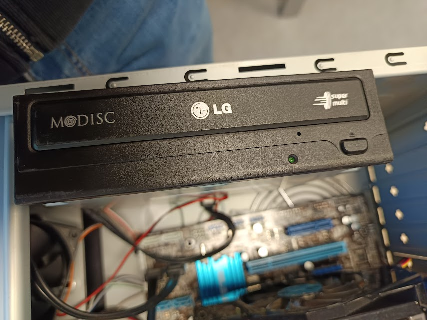
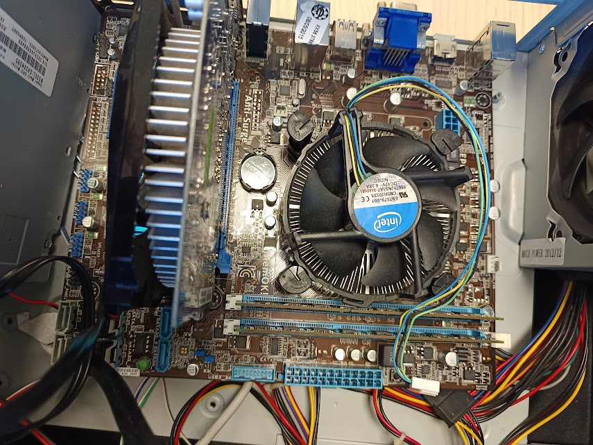

Nella prima immagine si può vedere un lettore CD di un computer è un'unità ottica che utilizza un raggio laser per leggere i dati memorizzati su un Compact Disc.
può leggere dati come software, dei videogiochi, della musica e anche file personali.

La seconda foto rappresenta l'interno del pc, dove si trovano la scheda madre,la scheda video, le ram e anche
tutti gli altri componenti del computer.